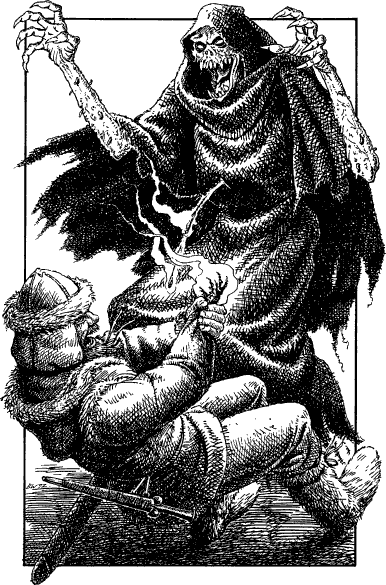

264
You follow Captain Lanza as he races down to the base of the watchtower and hurries off along the slate-cobbled avenue which leads directly to the harbour. As he runs he curses and barks orders at the garrison soldiers who are fleeing from the quay, but they are wide-eyed with terror and all appear deaf to his commands. As you reach a bend in the road, you see the great black ship shuddering to a halt alongside the harbour wall. Instantly, a horde of undead warriors leap onto the quay and come rushing in pursuit of the routing Lencians. Their eyes burn with an unnatural fire and they howl like unchained demons as they mercilessly hunt their human prey.
Lanza manages to rally a dozen of his best men to form a defensive line across the narrow avenue. With their shields overlapping and their swords poised ready to thrust, they brace themselves to receive the first wave of undead. The pugnacious captain shouts words of encouragement to stave off their fear but it is clear to you that every single one of them is terrified. Their faces are drenched with sweat despite the biting cold.
With a hideous howl, the advancing mass of undead fall upon their line, hacking and stabbing at their shield-wall with their rust-dulled blades. The Lencians fight back furiously, shattering bones and cleaving skulls, but they are forced to give ground before the pressing onslaught.

Then, from the midst of the enemy ranks, a grisly creature clad in mouldering black robes comes bursting through the shield-wall. A Lencian turns to thrust his sword into the creature’s wormy flesh. His attack releases a gout of venom and instantly his sword crumples—corroded by the foul blood. The venom splashes him and he falls screaming to the ground, clutching at the smouldering stump that was once his hand. The creature howls with malicious glee as it leaps over his writhing body. It rushes towards you, its eye sockets blazing and its black claws extended to rake your flesh.
Cabalah: COMBAT SKILL 47 ENDURANCE 45
This undead creature is immune to Mindblast, Psi-surge, and Kai-surge.
You may escape from this creature after three rounds of combat by turning to 76.
If you stay and win the fight, turn to 209.